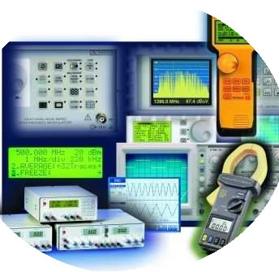

Profesor: Benjamin Herrera
unidades de credito: 4 u/c
código de materia: TLC-31514
salón: Piso 3/15
horas a la semana: 5
descripción: El programa define los aspectos teóricos y prácticos de la instrumentación de las comunicaciones, incluye el estudio del osciloscopio, tipos de medición, transductores, componentes de circuito de RF, generadores de señales, voltímetros digitales, analizadores y contadores universales. Para la comprensión de estos temas es necesario el conocimiento básico de técnicas de medición e instrumentación.
